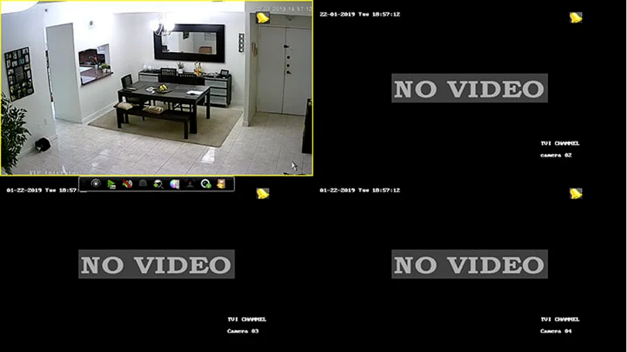
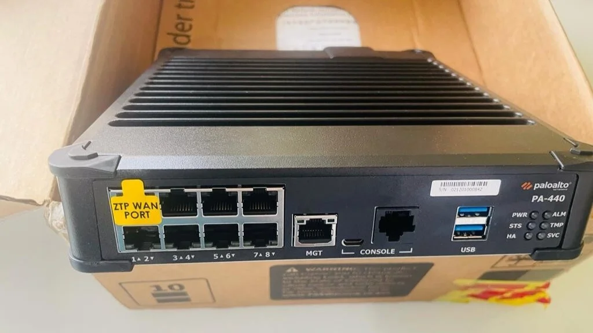
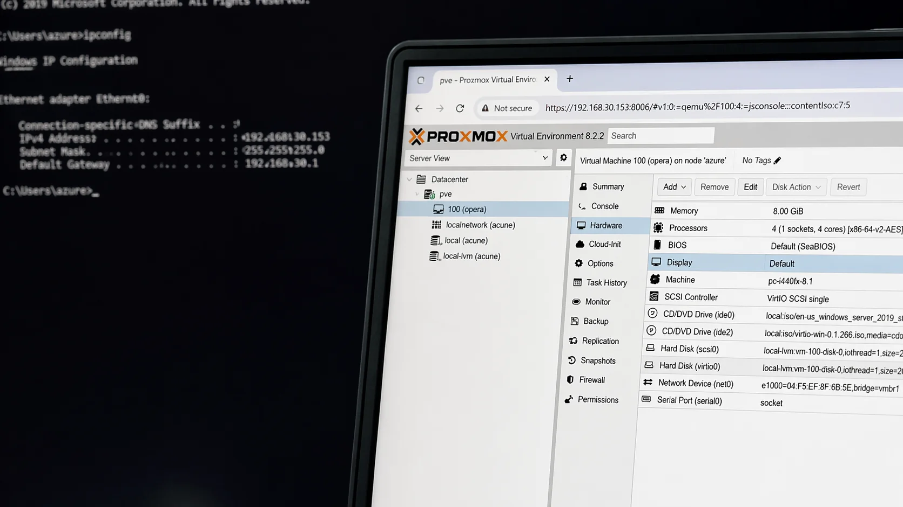

IT-услуги в Ташкенте: support, audit и порядок
Закрываем ежедневные ИТ-проблемы, держим инфраструктуру под контролем и наводим технический порядок для бизнеса.
ПодробнееРеальные задачи бизнеса, практические решения и полезные ИТ-материалы. Камеры, аудит, сети, серверы, безопасность, телефония и другие направления.
Закрываем ежедневные ИТ-проблемы, держим инфраструктуру под контролем и наводим технический порядок для бизнеса.
Подробнее
Проверяем компьютеры, сеть, безопасность и процессы, а затем даём конкретные рекомендации без лишней воды.
Подробнее
Продумываем расположение камер, архив, просмотр с телефона и стабильную работу системы без слепых зон.
Подробнее
Разбираем, почему пропала картинка, не открывается архив или камера уходит в офлайн, и как это чинить без лишних потерь.
Подробнее
Показываем, где камеры реально полезны в офисе, сколько их нужно и как не испортить проект лишними точками.
Подробнее
Выстраиваем офисный Wi‑Fi так, чтобы сеть держала нагрузку, не мешала работе и не разваливалась при росте команды.
Подробнее
Разбираем, почему офисный Wi‑Fi тормозит, где искать узкое место и какие шаги реально ускоряют сеть.
Подробнее
Разбираем, где бизнесу нужен backup, что реально должно копироваться и почему без проверки восстановления резерв бесполезен.
Подробнее
Настраиваем backup для файлов, баз и серверов так, чтобы восстановление было быстрым и понятным, а не только формально успешным.
Подробнее
Разбираем, как безопасно подойти к ремонту сервера, не потерять данные и не затянуть простой бизнеса.
Подробнее
Показываем, как понять, что тормозит сервер: диски, память, процессор, виртуалки, база или сама архитектура.
Подробнее
Настраиваем Windows Server для домена, общих папок, пользователей, принтеров и спокойной офисной работы.
Подробнее
Настраиваем MikroTik для офиса: интернет, сегментация, VPN, правила доступа и стабильная работа сети.
Подробнее
Помогаем выстроить firewall так, чтобы офисная сеть была безопасной, а правила — понятными и управляемыми.
Подробнее
Соединяем офисы и филиалы в одну защищённую сеть, чтобы сотрудники спокойно работали с общими системами и данными.
Подробнее
Подключаем филиал, склад или удалённый офис к основной системе компании через безопасный VPN-доступ.
Подробнее
Настраиваем Face ID для прохода сотрудников, учёта посещаемости и более аккуратного контроля доступа на объекте.
Подробнее
Помогаем внедрить систему посещаемости так, чтобы она давала ясную картину по сотрудникам, а не новые споры и ручную работу.
ПодробнееПомогаем внедрить турникет так, чтобы проход был быстрым, контроль понятным, а система не мешала ежедневной работе.
Подробнее
Выстраиваем телефонию для call-центра так, чтобы звонки не терялись, очереди были прозрачными, а качество работы видно по фактам.
Подробнее
Настраиваем SIP-телефонию для офиса: внутренние номера, переадресации, записи и удобную схему звонков для команды.
Подробнее
Настраиваем запись звонков так, чтобы её было удобно использовать для качества сервиса, анализа и внутренних разборов.
ПодробнееПомогаем бизнесу выстроить ИТ так, чтобы инфраструктура не мешала росту, а поддержка работала спокойно и предсказуемо.
Подробнее
Настраиваем поддержку и инфраструктуру офиса так, чтобы техника, сеть, принтеры и сервисы не тормозили ежедневную работу команды.
Подробнее
Объясняем, когда аутсорс ИТ-специалиста даёт бизнесу реальную пользу, а не просто заменяет одного человека другим.
ПодробнееНастраиваем сетевые принтеры так, чтобы печать работала предсказуемо, а пользователи не зависели от одного компьютера.
ПодробнееВыстраиваем файловый сервер так, чтобы общие данные были доступны удобно, безопасно и без хаоса по правам.
Подробнее
Настраиваем Zabbix так, чтобы серверы, сеть и сервисы были под наблюдением, а команда получала полезные сигналы, а не шум.
Подробнее
Помогаем выстроить виртуализацию на Proxmox так, чтобы виртуальные машины, ресурсы и backup были под контролем.
Подробнее
Настраиваем Windows-домен так, чтобы пользователи, компьютеры и политики управлялись централизованно и без лишней ручной рутины.
Подробнее